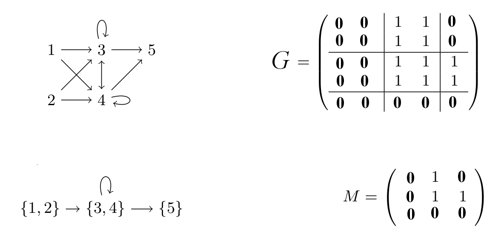

Block modeling problem¶
Brief description¶
This is a clustering problem, occuring in social network analysis. The problem is to divide a given graph G into k clusters such that the interactions between clusters can be summarized by a k*k 0/1 matrix M: if M[i,j]=1 then all the nodes in cluster i should be connected to all the nodes in cluster j in G, else if M[i,j]=0 then there should be no edge between the nodes in G. The goal is to find a k-clustering and the associated matrix M minimizing the number of erroneous edges. A Mattenet, I Davidson, S Nijssen, P Schaus. Generic Constraint-Based Block Modeling Using Constraint Programming. CP 2019, pp656-673, Stamford, CT, USA.
CFN model¶
We create N variables for every node of the graph with domain size k. We add k*k Boolean variables for representing M. For all triplets of two nodes u, v, and one matrix cell M[i,j], we have a ternary cost function which returns a cost of 1 if node u is assigned to cluster i, v to j, and M[i,j]=1 but (u,v) is not in G, or M[i,j]=0 and (u,v) in G. In order to break symmetries, we constrain the first k-1 node variables to be assigned to cluster index less than or equal to their index
Data¶
You can try a small example simple.mat with optimum value equal to 0 for 3 clusters.
Perfect solution for the small example with k=3 (Mattenet et al, CP 2019)
{kind=link}
More examples with 3 clusters (Stochastic Block Models [Funke and Becker, Plos One 2019])

See other examples, such as PoliticalActor and more, here :
100.mat |
150.mat |
200.mat |
30.mat |
50.mat |
hartford_drug.mat |
kansas.mat |
politicalactor.mat |
sharpstone.mat |
transatlantic.mat.
Python model generator¶
The following code using python3 interpreter will generate the corresponding cost function network (e.g. “python3 blockmodel.py simple.mat 3”). Download the AWK script sol2block.awk to pretty print the results (e.g., “python3 blockmodel.py simple.mat 3 | toulbar2 –stdin=cfn -s=3 | awk -f ./sol2block.awk”).
import sys
def flatten(x):
result = []
for el in x:
if hasattr(el, "__iter__") and not isinstance(el, str) and not isinstance(el, tuple) and not isinstance(el, dict):
result.extend(flatten(el))
else:
result.append(el)
return result
def cfn(problem, isMinimization, initPrimalBound, floatPrecision=0):
globals_key_order = ["rhs", "capacity", "weights", "weightedvalues", "metric", "cost", "bounds", "vars1", "vars2", "nb_states", "starts", "ends", "transitions", "nb_symbols", "nb_values", "start", "terminals", "non_terminals", "min", "max", "values", "defaultcost", "tuples", "comparator", "to"]
print('{')
print('\tproblem: { "name": "%s", "mustbe": "%s%.*f" },' % (problem["name"], "<" if (isMinimization) else ">", floatPrecision, initPrimalBound))
print('\tvariables: {', end='')
for i,e in enumerate(flatten(problem["variables"])):
if i > 0: print(', ', end='')
print('"%s":' % e[0], end='')
if isinstance(e[1], int):
print(' %s' % e[1], end='')
else:
print('[', end='')
for j,a in enumerate(e[1]):
if j > 0: print(', ', end='')
print('"%s"' % a, end='')
print(']', end='')
print('},')
print( '\tfunctions: {')
for i,e in enumerate(flatten(problem["functions"])):
if i > 0: print(',')
if e.get("name") is not None: print('\t\t"%s": {scope: [' % e.get("name"), end='')
else: print('\t\t{scope: [', end='')
scope = {}
for j,x in enumerate(e.get("scope")):
if (x in scope): sys.exit(str(e) + '\nError: scope of function ' + str(i) + ' with the same variable twice is forbidden!')
if j > 0: print(', ', end='')
print('"%s"' % x, end='')
scope[x]=j
print('], ', end='')
if e.get("type") is not None:
print('"type:" %s, ' % e.get("type"), end='')
if e.get("params") is not None:
if isinstance(e.get("params"), dict):
print('"params": {', end='')
first = True
for key in globals_key_order:
if key in e.get("params"):
if not first: print(', ', end='')
if isinstance(e.get("params")[key], str): print('"%s": "%s"' % (str(key),str(e.get("params")[key]).replace("'", '"')), end='')
else: print('"%s": %s' % (str(key),str(e.get("params")[key]).replace("'", '"')), end='')
first = False
print ('}', end='')
else: print('"params": %s, ' % str(e.get("params")).replace("'",'"'), end='')
if e.get("defaultcost") is not None:
print('"defaultcost:" %s, ' % e.get("defaultcost"), end='')
if e.get("costs") is not None:
print('"costs": ', end='')
if isinstance(e.get("costs"), str):
print('"%s"' % e.get("costs"), end='') # reuse future cost function by giving its name here
else:
print('[', end='')
for j,c in enumerate(e.get("costs")):
if j > 0: print(', ', end='')
if isinstance(c, str) and not c.isdigit():
print('"%s"' % c, end='')
else:
print('%s' % c, end='')
print(']', end='')
print('}', end='')
print('}\n}')
class Data:
def __init__(self, filename, k):
lines = open(filename).readlines()
self.n = len(lines)
self.matrix = [[int(e) for e in l.split(' ')] for l in lines]
self.top = 1 + self.n*self.n
def model(data, K):
Var = [(chr(65 + i) if data.n < 28 else "x" + str(i)) for i in range(data.n)] # Political actor or any instance
# Var = ["ron","tom","frank","boyd","tim","john","jeff","jay","sandy","jerry","darrin","ben","arnie"] # Transatlantic
# Var = ["justin","harry","whit","brian","paul","ian","mike","jim","dan","ray","cliff","mason","roy"] # Sharpstone
# Var = ["Sherrif","CivilDef","Coroner","Attorney","HighwayP","ParksRes","GameFish","KansasDOT","ArmyCorps","ArmyReserve","CrableAmb","FrankCoAmb","LeeRescue","Shawney","BurlPolice","LyndPolice","RedCross","TopekaFD","CarbFD","TopekaRBW"] # Kansas
BlockModeling = {
"name": "BlockModel_N" + str(data.n) + "_K" + str(K),
"variables": [[("M_" + str(u) + "_" + str(v), 2) for u in range(K) for v in range(K)],
[(Var[i], K) for i in range(data.n)]],
"functions":
[
# objective function
[{"scope": ["M_" + str(u) + "_" + str(v), Var[i], Var[j]],
"costs": [1 if (u == k and v == l and data.matrix[i][j] != m)
else 0
for m in range(2)
for k in range(K)
for l in range(K)]}
for u in range(K) for v in range(K) for i in range(data.n) for j in range(data.n) if i != j],
# self-loops
[{"scope": ["M_" + str(u) + "_" + str(u), Var[i]],
"costs": [1 if (u == k and data.matrix[i][i] != m)
else 0
for m in range(2)
for k in range(K)]}
for u in range(K) for i in range(data.n)],
# breaking partial symmetries by fixing first (K-1) domain variables to be assigned to cluster less than or equal to their index
[{"scope": [Var[l]],
"costs": [data.top if k > l else 0 for k in range(K)]}
for l in range(K-1)]
]
}
return BlockModeling
if __name__ == '__main__':
# read parameters
if len(sys.argv) < 2: exit('Command line argument is problem data filename and number of blocks')
K = int(sys.argv[2])
data = Data(sys.argv[1], K)
# dump problem into JSON .cfn format for minimization by toulbar2 solver
cfn(model(data, K), True, data.top)
We improve the previous model by sorting node variables by decreasing out degree and removing the lower triangular matrix of M if the input graph is undirected (symmetric adjacency matrix).
import sys
def flatten(x):
result = []
for el in x:
if hasattr(el, "__iter__") and not isinstance(el, str) and not isinstance(el, tuple) and not isinstance(el, dict):
result.extend(flatten(el))
else:
result.append(el)
return result
def cfn(problem, isMinimization, initPrimalBound, floatPrecision=0):
globals_key_order = ["rhs", "capacity", "weights", "weightedvalues", "metric", "cost", "bounds", "vars1", "vars2", "nb_states", "starts", "ends", "transitions", "nb_symbols", "nb_values", "start", "terminals", "non_terminals", "min", "max", "values", "defaultcost", "tuples", "comparator", "to"]
print('{')
print('\tproblem: { "name": "%s", "mustbe": "%s%.*f" },' % (problem["name"], "<" if (isMinimization) else ">", floatPrecision, initPrimalBound))
print('\tvariables: {', end='')
for i,e in enumerate(flatten(problem["variables"])):
if i > 0: print(', ', end='')
print('"%s":' % e[0], end='')
if isinstance(e[1], int):
print(' %s' % e[1], end='')
else:
print('[', end='')
for j,a in enumerate(e[1]):
if j > 0: print(', ', end='')
print('"%s"' % a, end='')
print(']', end='')
print('},')
print( '\tfunctions: {')
for i,e in enumerate(flatten(problem["functions"])):
if i > 0: print(',')
if e.get("name") is not None: print('\t\t"%s": {scope: [' % e.get("name"), end='')
else: print('\t\t{scope: [', end='')
scope = {}
for j,x in enumerate(e.get("scope")):
if (x in scope): sys.exit(str(e) + '\nError: scope of function ' + str(i) + ' with the same variable twice is forbidden!')
if j > 0: print(', ', end='')
print('"%s"' % x, end='')
scope[x]=j
print('], ', end='')
if e.get("type") is not None:
print('"type:" %s, ' % e.get("type"), end='')
if e.get("params") is not None:
if isinstance(e.get("params"), dict):
print('"params": {', end='')
first = True
for key in globals_key_order:
if key in e.get("params"):
if not first: print(', ', end='')
if isinstance(e.get("params")[key], str): print('"%s": "%s"' % (str(key),str(e.get("params")[key]).replace("'", '"')), end='')
else: print('"%s": %s' % (str(key),str(e.get("params")[key]).replace("'", '"')), end='')
first = False
print ('}', end='')
else: print('"params": %s, ' % str(e.get("params")).replace("'",'"'), end='')
if e.get("defaultcost") is not None:
print('"defaultcost:" %s, ' % e.get("defaultcost"), end='')
if e.get("costs") is not None:
print('"costs": ', end='')
if isinstance(e.get("costs"), str):
print('"%s"' % e.get("costs"), end='') # reuse future cost function by giving its name here
else:
print('[', end='')
for j,c in enumerate(e.get("costs")):
if j > 0: print(', ', end='')
if isinstance(c, str) and not c.isdigit():
print('"%s"' % c, end='')
else:
print('%s' % c, end='')
print(']', end='')
print('}', end='')
print('}\n}')
class Data:
def __init__(self, filename, k):
lines = open(filename).readlines()
self.n = len(lines)
self.matrix = [[int(e) for e in l.split(' ')] for l in lines]
self.top = 1 + self.n*self.n
def model(data, K):
symmetric = all([data.matrix[i][j] == data.matrix[j][i] for i in range(data.n) for j in range(data.n) if j>i])
Var = [(chr(65 + i) if data.n < 28 else "x" + str(i)) for i in range(data.n)]
# sort node variables by decreasing out degree
degree = [(i, sum(data.matrix[i])) for i in range(data.n)]
degree.sort(key=lambda tup: -tup[1])
indexes = [e[0] for e in degree]
BlockModeling = {
"name": "BlockModel_N" + str(data.n) + "_K" + str(K) + "_Sym" + str(symmetric),
# order node variables before matrix M variables
# order matrix M variables starting from the main diagonal and moving away progressively
# if input graph is symmetric then keep only the upper triangular matrix of M
"variables": [[("M_" + str(u) + "_" + str(u), 2) for u in range(K)],
[("M_" + str(u) + "_" + str(v), 2) for d in range(K) for u in range(K) for v in range(K)
if u != v and (not symmetric or u < v) and abs(u - v) == d],
[(Var[indexes[i]], K) for i in range(data.n)]],
"functions":
[
# objective function
# if input graph is symmetric then cost tables are also symmetric wrt node variables
[{"scope": ["M_" + str(u) + "_" + str(v), Var[indexes[i]], Var[indexes[j]]],
"costs": [1 if (((u == k and v == l) or (symmetric and u == l and v == k))
and data.matrix[indexes[i]][indexes[j]] != m)
else 0
for m in range(2)
for k in range(K)
for l in range(K)]}
for u in range(K) for v in range(K) for i in range(data.n) for j in range(data.n)
if i != j and (not symmetric or u <= v)],
# self-loops
[{"scope": ["M_" + str(u) + "_" + str(u), Var[indexes[i]]],
"costs": [1 if (u == k and data.matrix[indexes[i]][indexes[i]] != m)
else 0
for m in range(2)
for k in range(K)]}
for u in range(K) for i in range(data.n)],
# breaking partial symmetries by fixing first (K-1) domain variables to be assigned to cluster less than or equal to their index
[{"scope": [Var[indexes[l]]],
"costs": [data.top if k > l else 0 for k in range(K)]}
for l in range(K-1)]
]
}
return BlockModeling
if __name__ == '__main__':
# read parameters
if len(sys.argv) < 2: exit('Command line argument is problem data filename and number of blocks')
K = int(sys.argv[2])
data = Data(sys.argv[1], K)
# dump problem into JSON .cfn format for minimization by toulbar2 solver
cfn(model(data, K), True, data.top)